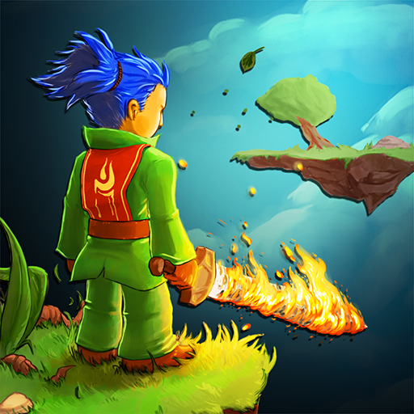

Swordigo
نبذة عن اللعبة: سيف الأبطال والمغامرة السحرية
تُعد **Swordigo** مزيجاً مثالياً بين عناصر ألعاب المنصات (Platformers) الكلاسيكية وآليات ألعاب تقمص الأدوار (Action RPG) الحديثة. تبدأ القصة ببطل شاب يسعى لاستعادة سيف المعلم المفقود، ليجد نفسه منغمساً في حرب ضد قوى الظلام التي تهدد بابتلاع العالم.
اللعبة تقدم عالماً مفتوحاً نسبياً لاستكشافه، حيث يجب عليك الركض والقفز بدقة بين المنصات، وحل الألغاز، ومحاربة وحوش الأبراج المحصنة. كل وحش تهزمه يكسبك نقاط خبرة لترقية مستواك وقدراتك.
مميزات اللعبة الملحمية
- **مزيج فريد:** دمج سلس بين القفز المتقن على المنصات والقتال العميق بالسيف والسحر.
- **نظام RPG متكامل:** اكتساب الخبرة، رفع مستوى الصحة (Health) والهجوم (Attack) والسحر (Magic).
- **أسلحة وتعويذات متنوعة:** العثور على أسلحة جديدة مثل "Sword of Heroes" واكتساب تعويذات قوية مثل "Blast" و "Heal".
- **استكشاف عميق:** اكتشف ممرات سرية، صناديق كنوز مخبأة، ومتاهات معقدة.
- **رسومات ثلاثية الأبعاد أنيقة:** عالم جميل ومفصل مع تأثيرات إضاءة سحرية.
- **ضوابط تحكم مُحسّنة:** تم تصميمها بدقة لتوفر تحكماً سلساً باللمس على الأجهزة المحمولة.
⚙️ متطلبات التشغيل
- **أندرويد:** يتطلب Android 4.1 أو أحدث.
- **iOS:** يتطلب iOS 9.0 أو أحدث.
- **مساحة التخزين:** خفيفة الوزن، حوالي 150 ميجابايت.
معلومات إضافية
- **المطور / الناشر:** Touch Foo
- **النوع:** مغامرات، منصات، أكشن RPG
- **السعر:** مجانية للعب مع خيار إزالة الإعلانات بمبلغ بسيط.
🛡️ دليل الأبطال في Swordigo: إتقان السحر والقتال
🌟 بناء الشخصية الأمثل (Stat Allocation)
توزيع النقاط الإحصائية بشكل صحيح هو مفتاح النجاح، خاصةً عند مواجهة الزعماء. أفضل طريقة للمبتدئين هي التوازن:
- **الصحة (Health):** قم بترقية الصحة أولاً حتى تصل إلى 150 نقطة. هذا يضمن بقاءك على قيد الحياة أثناء استكشاف الأبراج المحصنة القاسية.
- **الهجوم (Attack):** بعد الوصول إلى 150 صحة، ركز على الهجوم لزيادة سرعة القضاء على الأعداء وفتح التعويذات الأكثر فعالية.
- **السحر (Magic):** قم بترقية السحر تدريجياً لزيادة قوة التعاويذ وعدد مرات استخدامها. ركز على هذه الميزة إذا كنت تفضل الهجوم عن بعد.
🔥 أفضل التعويذات وأساليب استخدامها
يوجد في اللعبة عدد قليل من التعويذات، لكن كل واحدة منها حاسمة في مواقف معينة:
- **Blast (الانفجار):** تعويذة هجومية أساسية، مثالية لصد الوحوش المتطايرة أو الضغط على الأعداء من مسافة آمنة.
- **Heal (الشفاء):** ضرورية للنجاة. لا تستخدمها مباشرة عند فقدان قدر ضئيل من الصحة؛ احتفظ بها للحظات الحرجة قبل مواجهة الزعماء أو عندما تكون صحتك منخفضة جداً.
- **Cloud Jump (قفزة السحابة):** ليست هجومية، لكنها الأهم للاستكشاف. تسمح لك بالوصول إلى المناطق المخفية والكنوز، ويجب العثور عليها مبكراً.
⚔️ أسرار الأسلحة القوية
العثور على الأسلحة الأفضل يقلل من طحن المستويات:
- **Sword of Souls:** هذا السيف يمتص طاقة الأعداء الميتة، مما يساعد في ترقية مستواك بشكل أسرع. ابحث عنه مبكراً لزيادة الخبرة المكتسبة.
- **Master Sword:** السيف الأكثر قوة وضرراً. يتم إخفاؤه غالباً في أبعد الأبراج المحصنة أو يتطلب حل ألغاز معقدة للعثور عليه.